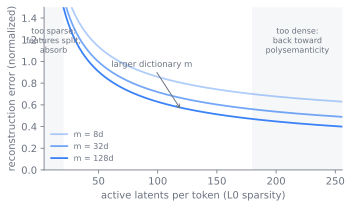

Mechanistic Interpretability
A trained transformer is a few hundred billion numbers that produce behavior no one wrote down. Mechanistic interpretability is the attempt to read those numbers as computation: to find the features a model represents and the circuits that connect them, the way one might reverse engineer a binary into source. By the end of this chapter a reader can explain why a single neuron rarely means one thing, why sparse dictionaries became the field's main tool for pulling features apart, and why the question of whether that tool is the right one is still open.
The neuron that means everything
Open a transformer and look for the obvious place to start. The natural unit of a neural network is the neuron, and the natural hope is that each neuron means something: this one fires on Python code, that one on the color red. Early vision work found a few neurons like that. Language models do not cooperate. Probe a neuron in a transformer and it fires on a grab bag of unrelated things, a curve detector and a car wheel and a line of French at once. This is polysemanticity, and it is the wall that stops naive interpretation. If the unit you can read does not carry a single meaning, reading it tells you nothing.
The wall is not that the model has no concepts. It is that the model has far more concepts than it has neurons, and it stores them anyway. A residual stream of width has only orthogonal directions, yet the model seems to track tens of thousands of distinct features. Something has to give. The features cannot each get a private direction, so they share. Everything in this chapter is a way of undoing that sharing: recovering the concepts the model uses from the activations that smear them together, then showing how those concepts feed each other to produce an output. The payoff is the input to Chapter 33: oversight that can only watch behavior is blind to a model that behaves until it does not, whereas oversight that can read features has a chance of catching a plan before it executes.
So the chapter is organized around one obstacle and the escalating attempts to defeat it. First, the two ideas that explain why the wall exists and suggest how to climb it. Then circuits, which turn recovered features into explanations of behavior. Then the decade-long arms race that carried the method from hand-traced vision filters to causal graphs of a production model. Then the open trial of whether the field's main tool is the right one. And last, an honest accounting of what the tool still leaves behind.
Two ideas that climb the wall
The escape from polysemanticity rests on two ideas, a hypothesis about how models store features and a method for recovering them.
The hypothesis is superposition. A model represents more features than it has dimensions by assigning each feature a direction in activation space and letting those directions overlap. This works because features are sparse: on any given token, only a handful of the thousands of possible features are active, so the model can tolerate interference between directions that are rarely on at the same time. Elhage et al. built the cleanest demonstration in "Toy Models of Superposition" (Elhage et al. 2022): a tiny autoencoder forced to pack sparse features into fewer than dimensions does exactly this, arranging the feature directions into regular geometric structures and trading reconstruction error against interference as a function of sparsity. Polysemanticity, in this picture, is not a defect. It is the visible shadow of a model using superposition to fit more features than it has neurons.
If features live along directions rather than on neurons, the right unit of analysis is a direction, and the right tool is one that finds the directions. That tool is dictionary learning, implemented as a sparse autoencoder (SAE) (Cunningham et al. 2023). An SAE takes a model activation and learns an overcomplete dictionary of feature directions, encoding as a sparse vector of feature activations and decoding it back:
trained to minimize reconstruction error plus a sparsity penalty so that only a few of the features fire on any input. The columns of are the recovered feature directions. Because exceeds , the dictionary is overcomplete: it has room to give each underlying feature its own slot even though the model had to pack them into crowded dimensions. The features the SAE recovers are far more often monosemantic than the raw neurons, which is the whole point.
Figure 32.1 shows the two-sided number tension that makes this work. The model compresses many sparse true features into the shared directions of the residual stream, accepting interference between directions that rarely fire together. The SAE runs the compression backward, expanding that -vector into slots so each feature can land in its own direction again.
flowchart LR
subgraph world["True features (many, sparse)"]
direction TB
f1["curve"]
f2["French"]
f3["DNA"]
f4["car wheel"]
end
subgraph stream["Residual stream: d directions, shared"]
direction TB
s["overlapping directions<br>tolerable interference<br>polysemantic neurons"]
end
subgraph dict["SAE dictionary: m >> d slots"]
direction TB
d1["curve"]
d2["French"]
d3["DNA"]
d4["car wheel"]
end
world -->|"superposition<br>compress"| stream
stream -->|"sparse autoencoder<br>expand"| dictFrom nouns to verbs: circuits
Features alone are nouns. To explain behavior you need verbs, the connections that carry one feature's activation into another. That is the circuit. A circuit is a subgraph of the model's computation, a small set of features and the weights between them that together implement a recognizable algorithm. The earliest worked example outside vision was the induction head, a two-attention-head circuit that implements the rule "if the token was followed by earlier in the context, and I just saw again, predict ." Olsson et al. traced this circuit and tied its formation to a phase change in training that coincides with the onset of in-context learning (Olsson et al. 2022). The agenda of the field is to do for arbitrary behavior what induction heads did for copying: name the features, name the wires, check the explanation by intervening.
Two things make that agenda hard, and they pull in opposite directions. Naming features needs a unit that means one thing, which superposition denies the neuron and dictionary learning tries to restore. Naming wires needs a model of how those units compose, which is the circuit. The history of the field is the story of these two needs forcing each other forward.
An arms race against the wall
The lineage runs from hand-traced circuits to learned features to causal graphs, each step forced by the limit of the last.
It began in vision. Olah et al., in the Distill thread "Zoom In: An Introduction to Circuits," argued that features are real and circuits connecting them are real, and showed both by hand in convolutional networks (Olah et al. 2020). Carrying this to transformers needed an algebra for the architecture. Elhage et al. supplied it in "A Mathematical Framework for Transformer Circuits" (Elhage et al. 2021): the residual stream as a shared communication channel that every layer reads from and writes to, attention heads as operations that move information between positions, and the composition rules that let heads form multi-step circuits. Induction heads were the first big result that framework explained.
Then the wall: hand-tracing does not scale, and superposition means the neurons you would trace are polysemantic anyway. "Toy Models of Superposition" named the obstacle (Elhage et al. 2022). The escape was to stop reading neurons and start learning features. Cunningham et al., "Sparse Autoencoders Find Highly Interpretable Features in Language Models" (Cunningham et al. 2023), and Anthropic's "Towards Monosemanticity" (Bricken et al. 2023) landed the same idea at the same time: train an SAE on a model's activations and the recovered dictionary is far more interpretable than the neuron basis. Bricken et al. worked on a one-layer transformer with a 512-neuron MLP and showed that dictionary features picked out crisp concepts, such as Arabic script or DNA sequences, that no single neuron cleanly held.
The open question was whether this survived scale. "Scaling Monosemanticity" carried SAEs up to Claude 3 Sonnet, a production model, training dictionaries on its middle-layer residual stream and recovering abstract, multilingual, multimodal features (Templeton et al. 2024), including the Golden Gate Bridge feature that, when clamped on, produced the "Golden Gate Claude" that steered every conversation toward the bridge. The intervention mattered more than the demo: it showed the features were causal, not just correlated. In parallel, the engineering of SAEs tightened. Gao et al., "Scaling and Evaluating Sparse Autoencoders" (Gao et al. 2024), replaced the soft L1 penalty with a top- activation that fixes the number of live features directly, which removed a tuning headache, cut the population of dead latents, and produced clean scaling laws relating dictionary size and sparsity to reconstruction. Figure 32.2 sketches that relationship: more active latents per token buy lower reconstruction error, a larger dictionary shifts the whole frontier down, and the two ends of the sparsity axis carry the failure modes the chapter returns to later.

Sweep the top- sparsity below and watch the reconstruction error fall, then flatten once reaches the true number of active features, leaving a nonzero residue that no extra latent removes.
import numpy as np
import matplotlib.pyplot as plt
rng = np.random.default_rng(0)
d, m, n_true = 32, 96, 6 # residual width d, dictionary slots m, true active features
D = rng.standard_normal((m, d))
D /= np.linalg.norm(D, axis=1, keepdims=True)
codes = np.zeros((300, m)) # each token uses only n_true of the m features
for c in codes:
idx = rng.choice(m, n_true, replace=False)
c[idx] = rng.standard_normal(n_true)
X = codes @ D + 0.15 * rng.standard_normal((300, d)) # activations are only nearly sparse
base = np.mean(X ** 2)
ks, frac = list(range(0, 13)), []
for k in ks:
f = codes.copy()
if k == 0:
f[:] = 0
else:
thr = np.sort(np.abs(f), axis=1)[:, -k][:, None]
f = np.where(np.abs(f) >= thr, f, 0.0) # keep only the k largest latents
frac.append(np.mean((X - f @ D) ** 2) / base)
plt.plot(ks, frac, "o-")
plt.axvline(n_true, ls="--", color="gray", label=f"true sparsity = {n_true}")
plt.xlabel("k active latents per token")
plt.ylabel("fraction of variance unexplained")
plt.legend(); plt.title("Top-k reconstruction: drops, then plateaus on a residue")
plt.show()
print("unexplained at k=0,3,6,12:", [round(frac[i], 3) for i in (0, 3, 6, 12)])
The latest step puts the nouns and verbs back together. Anthropic's 2025 work, "Circuit Tracing" (Ameisen et al. 2025) and "On the Biology of a Large Language Model" (Lindsey et al. 2025), builds attribution graphs: it replaces a model's MLPs with cross-layer transcoders, sparse interpretable features that read from one layer and write to all later ones, then traces the linear causal pathways through those features for a single prompt. The result is a graph whose nodes are features and whose edges are causal influences, a local circuit diagram for one input. Studied on Claude 3.5 Haiku, these graphs surfaced multi-step reasoning, planning ahead in rhymes, and shared machinery across languages (Lindsey et al. 2025).
Figure 32.3 traces this progression, where each step is forced by the limit of the one before it.
How the loop runs in practice is mechanical and worth seeing in outline. Collect a large sample of activations at one site in the model, the residual stream after a chosen layer or an MLP's hidden activations. Train the dictionary on them. With a top- encoder the forward pass is small:
# x: model activation, shape (batch, d)
pre = x @ W_enc + b_enc # (batch, m), m >> d
f = topk(pre, k) # keep k largest, zero the rest
x_hat = f @ W_dec + b_dec # reconstruct
loss = mse(x_hat, x) # no separate L1 term: k fixes sparsity
The fixed removes the sparsity coefficient that the L1 formulation forces you to tune, and is the practical reason top- SAEs displaced the older soft penalty (Gao et al. 2024). After training, each dictionary column is a candidate feature. You interpret it by gathering the inputs that activate it most, reading the pattern, and, crucially, testing the reading by clamping the feature on or off and watching the output move. A feature you cannot steer with is a feature you have not understood. Attribution graphs extend the same discipline to a whole computation: swap the MLPs for trained transcoders, run one prompt, and read off the causal graph among active features, then verify edges by perturbing nodes and confirming the downstream effect (Ameisen et al. 2025).
The trial of the sparse autoencoder
The arms race has carried the field to a production model and a causal graph, but it has not settled the central methodological question. The whole escape from the wall rests on one bet: that dictionary learning is how you read superposition. That bet is now on trial.
Whether the sparse autoencoder is the right interpretability primitive, or an artifact-prone detour, is actively debated. The case against has several named results. Kantamneni et al., "Are Sparse Autoencoders Useful? A Case Study in Sparse Probing" (Kantamneni et al. 2025), find that on downstream probing tasks SAE features rarely beat simple baselines once those baselines are made strong, which questions the practical payoff. Chanin et al. document feature absorption, where a general feature like "starts with L" goes silent on a specific token like "lion" because a more specific feature swallowed it, so the dictionary's apparent cleanliness is partly an artifact of the objective (Chanin et al. 2024). Others argue the L1 sparsity penalty pushes SAEs to learn frequent combinations rather than the atomic features that actually mediate computation, and that transcoders outperform SAEs on interpretability (arXiv:2501.18823). The defenders, centered on Anthropic's interpretability team and the authors of the scaling and attribution work, counter that SAEs are improvable engineering, not a dead end, that causal interventions like Golden Gate Claude show the features are real, and that attribution graphs already produce mechanistic accounts that bare probing cannot. The disagreement is not whether superposition is real. It is whether dictionary learning is how we should be reading it.
Superposition is a fact about the architecture in Chapter 6, and it dictates the shape of every tool in this chapter. Because the residual stream packs more features than it has dimensions, no method that reads neurons directly can work, and the field is forced into overcomplete dictionary learning. A property of how the model stores information sets the entire method stack of how we read it.
What the dictionary leaves behind
Every gain in this chapter is bought with a matching cost, and naming the costs is the honest way to read the trial above.
- Monosemanticity versus completeness. Sparsity buys clean, single meaning features, but a dictionary recovers only the features it was sized and trained to find. Push sparsity too hard and features split or get absorbed into each other; push too soft and they go polysemantic again. The SAE reconstructs the activation imperfectly, and the gap, the reconstruction error, is exactly the part of the model's computation the dictionary failed to explain.
- Faithfulness versus interpretability. A transcoder or SAE that replaces part of the model is interpretable only to the degree it stays faithful to what the original computed. Attribution graphs make this trade explicit: they freeze attention and approximate MLPs, so the graph is a readable story about a model that is not quite the one you deployed.
- Local versus global. An attribution graph explains one prompt. A feature dictionary describes one model at one training checkpoint. Neither yet gives a global, reusable account of what the model does on inputs you have not traced, which is what oversight ultimately wants.
- Effort versus coverage. Reading a circuit is slow human work. Auto-interpretation, using a model to label features, scales the labor but imports the labeler's errors, and the field has no settled metric for when a feature has been correctly understood.
The failure modes are specific, and each one is a way the dictionary lies about how clean it is. Dead latents are dictionary features that never fire and learn nothing, wasting capacity. Dead and over-firing latents together push you toward top- and careful initialization (Gao et al. 2024). Feature splitting hands you several narrow features where the model had one, and absorption hides a general feature inside a specific one, so the dictionary looks cleaner than the model is (Chanin et al. 2024). And the reconstruction error is not noise to be ignored: it is the unexplained residue, the part of the computation your dictionary did not capture, and a method that reports high interpretability while leaving large error has explained less than it claims. The wall, in the end, is never fully climbed. What the chapter offers is a measured account of how far up we are, and an honest reading of the distance left.
Further reading
- Olah et al., "Zoom In: An Introduction to Circuits," Distill, 2020. distill.pub/2020/circuits/zoom-in
- Elhage et al., "A Mathematical Framework for Transformer Circuits," 2021. transformer-circuits.pub/2021/framework
- Olsson et al., "In-context Learning and Induction Heads," 2022. transformer-circuits.pub/2022/in-context-learning-and-induction-heads
- Elhage et al., "Toy Models of Superposition," 2022. arXiv:2209.10652
- Cunningham et al., "Sparse Autoencoders Find Highly Interpretable Features in Language Models," 2023. arXiv:2309.08600
- Bricken et al., "Towards Monosemanticity: Decomposing Language Models with Dictionary Learning," 2023. transformer-circuits.pub/2023/monosemantic-features
- Templeton et al., "Scaling Monosemanticity: Extracting Interpretable Features from Claude 3 Sonnet," 2024. transformer-circuits.pub/2024/scaling-monosemanticity
- Gao et al., "Scaling and Evaluating Sparse Autoencoders," 2024. arXiv:2406.04093
- Ameisen et al., "Circuit Tracing: Revealing Computational Graphs in Language Models," 2025. transformer-circuits.pub/2025/attribution-graphs/methods
- Lindsey et al., "On the Biology of a Large Language Model," 2025. transformer-circuits.pub/2025/attribution-graphs/biology
- Kantamneni et al., "Are Sparse Autoencoders Useful? A Case Study in Sparse Probing," 2025. arXiv:2502.16681
- Chanin et al., "A is for Absorption: Studying Feature Splitting and Absorption in Sparse Autoencoders," 2024. arXiv:2409.14507